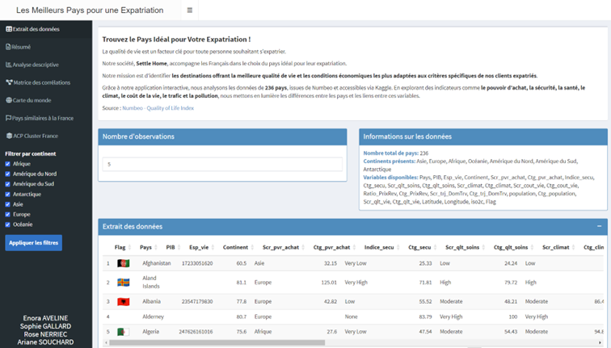
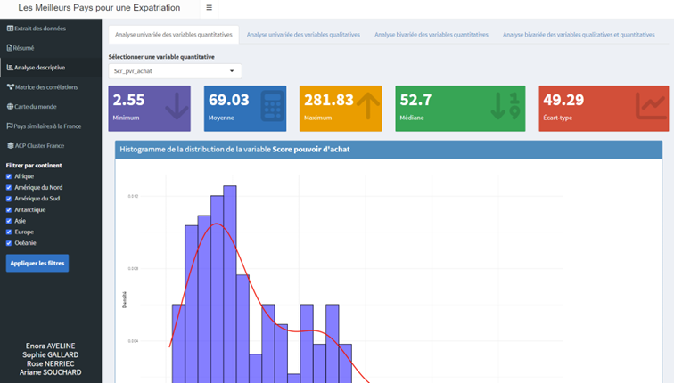
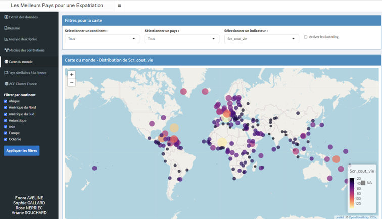
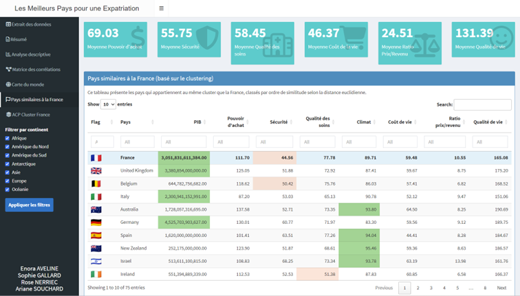

Création d'une application pour trouver le pays idéal pour votre expatriation
Présentation du projet
Ce projet R-Shiny a été réalisé pour Settle Home, une entreprise fictive accompagnant les Français dans le choix de leur pays d’expatriation. À partir de données issues de Numbeo (disponibles sur Kaggle), nous avons conçu une application interactive permettant d’évaluer la qualité de vie dans 236 pays selon différents critères.
Objectifs et livrables
- Identifier les meilleures destinations selon les critères définis par l'utilisateur
- Concevoir une interface claire et intuitive avec R-Shiny
- Analyser les relations entre les variables via des méthodes multivariées
- Fournir une fiche descriptive pour chaque pays sélectionné
- Restituer les résultats sous forme de cartes, graphiques et tableaux dynamiques
Données utilisées
Les données regroupent 236 pays avec des variables comme :
- Économie : PIB, pouvoir d’achat, coût de la vie
- Conditions de vie : sécurité, santé, climat, pollution, temps de trajet domicile-travail
- Données démographiques : population, espérance de vie
- Coordonnées géographiques : latitude, longitude, continent

Fiche interactive avec le drapeau et les principaux indicateurs d’un pays

Interface de sélection des critères et de comparaison entre pays

Carte des scores globaux de qualité de vie dans le monde

ACP (Analyse en Composantes Principales) et le Clustering – Regroupement des pays selon leurs indicateurs
Compétences mobilisées
- Utilisation de R et R-Shiny pour concevoir une application interactive
- Traitement et visualisation de données multivariées et géographiques
- Application de l’ACP et analyse des corrélations entre variables
- Conception UX/UI pour la clarté et l’intuitivité de l’outil
Lien avec les compétences du Programme National
- AC1 : Collecter, préparer et transformer des données complexes
- AC2 : Mettre en œuvre des méthodes d’analyse multivariée
- AC3 : Développer des applications de visualisation pour l’aide à la décision
- AC4 : Présenter les résultats de manière claire à un public non expert
Axe d’amélioration
Le projet pourrait être enrichi par l’ajout de profils utilisateurs types, une personnalisation des résultats ou encore l’intégration d’une API pour des données mises à jour automatiquement.